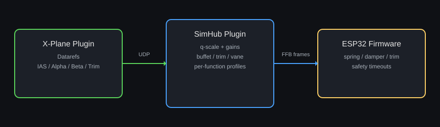

X-Plane FFB (Graph-Based)
This document describes the graph-driven force-feedback (FFB) pipeline used for X-Plane in the DIY FFB pedal/stick system.
Quick navigation:
- Architecture and data flow
- Inputs and outputs
- Graph workflow and tuning
- Profiles and persistence
- Troubleshooting
- Migration notes

Architecture and Data Flow
- X-Plane native plugin (DiyFfb Data Provider) streams the required telemetry over UDP.
- SimHub builds graph inputs from the latest UDP packet, evaluates the active FFB graph, and sends compact FFB frames to the ESP32.
- ESP32 applies the FFB outputs per function and reverts to safe defaults if updates stop arriving.
Note: The diagram illustrates the data flow. The legacy hardcoded math has been replaced by the graph runtime.
The graph input set is defined in FFB_Graph_Signal_Catalog.md. Common inputs include IAS, alpha/beta, trim, body rates, aero torque, rotor torque/speed, and on-ground status.
Outputs (Graph -> ESP32)
Graph outputs are mapped directly to flight FFB frames:
FlightStickPitch.*FlightStickRoll.*FlightPedals.*FlightStickCollective.*
Each group supplies SpringGain, DamperGain, Friction, LoadForce, TrimOffset, and BuffetAmplitude (collective excludes buffet).
Graph Workflow and Tuning
- Select a graph in the FFB Graph tab (vehicle graph or game fallback).
- The Vehicle/Aircraft tab lists all non-System graph parameters grouped by the Param node Group (function groups included).
- System parameters live in the FFB Graph tab (Group =
System), and per-function parameters live in the function tabs (Group starts with the function name, e.g., FlightStickPitch).
- Validate live outputs in the FFB Outputs panel.
Profiles and Persistence
- Per-aircraft profiles store graph parameter values.
- Save/load profiles from the FFB Graph tab.
- Graph parameter changes are tracked and prompted on aircraft changes.
Troubleshooting
No FFB movement:
- Ensure the ESP32/gateway connection is active.
- Confirm the active graph status is valid in the FFB Graph tab.
- Check that the X-Plane UDP data provider is running.
- Verify the UDP toggle and port in the X-Plane system tab (or
XPlaneUdpEnabled/XPlaneUdpPort in the settings JSON).
Outputs remain at zero:
- Confirm telemetry is fresh (X-Plane running and UDP streaming).
- Ensure graph outputs are connected to output nodes.
Migration Notes (Legacy Removal)
- The legacy X-Plane FFB math and tuning sliders were removed on 2026-01-29.
- Legacy tuning fields in saved configs are ignored; adjust tuning in the graph instead.
- Rotor selection defaults to auto; advanced users can set
XPlaneRotorIndex in settings if needed.